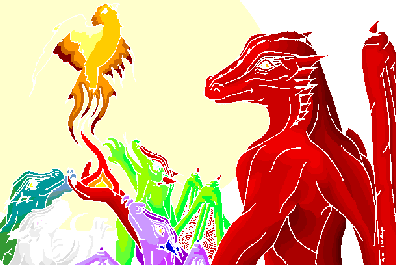

|

Hall of Mirrors `
Love is harder to earn than As you follow Karne along a series of interconnecting passages, you notice that the rough hewn walls are getting progressively smoother. The rock itself has taken on a glassy aspect, almost as if it has been melted and allowed to slowly cool and recongeal. This effect becomes more pronounced as you continue but before you can catch up with the dragon and ask him about it, the corridor opens up into a large room: This room, or hall, as it would better be described, is impressive indeed. You can't tell exactly what shape it is or even its true size. All the walls have been cut into facets and polished to a mirrored sheen. Up near the roof, a dozen oil lamps send lights bouncing round the room, reflecting and inter-reflecting off a hundred mirrored angles. Rather hesitantly, you enter and as you move, you send an infinite progression of reflections dancing. In every direction there are images of you or the slim, dark shape that is Karne. He grins as - somewhat disorientated - you join him in the centre of the room and stare around at yourself. It's like standing inside an enormous gemstone. Welcome to the Hall of Mirrors, impressive isn't it? Yes, I'm quite pleased with it myself. I'm afraid the idea wasn't entirely my own, a number of the old Clan fortresses had rooms - or even mazes! - like these, not that many still exist these days but I used to love them as a child. So - where would you like to visit? The dragon goes on to explain that by touching any of the facets of the room you can instantly visit either the lair of another dragon or some ancient site of note. He explains that the Circle of Stones works in a similar fashion. There you can visit some of Karne's friends. You find it interesting that your host seems to prefer the companionship of non-dragons over his own kind. |

 © Michael.Wright 1999 karne@innocent.com
© Michael.Wright 1999 karne@innocent.com
(8=:[ plaintive plea - please don't steal my art work! ]:=8)

 |